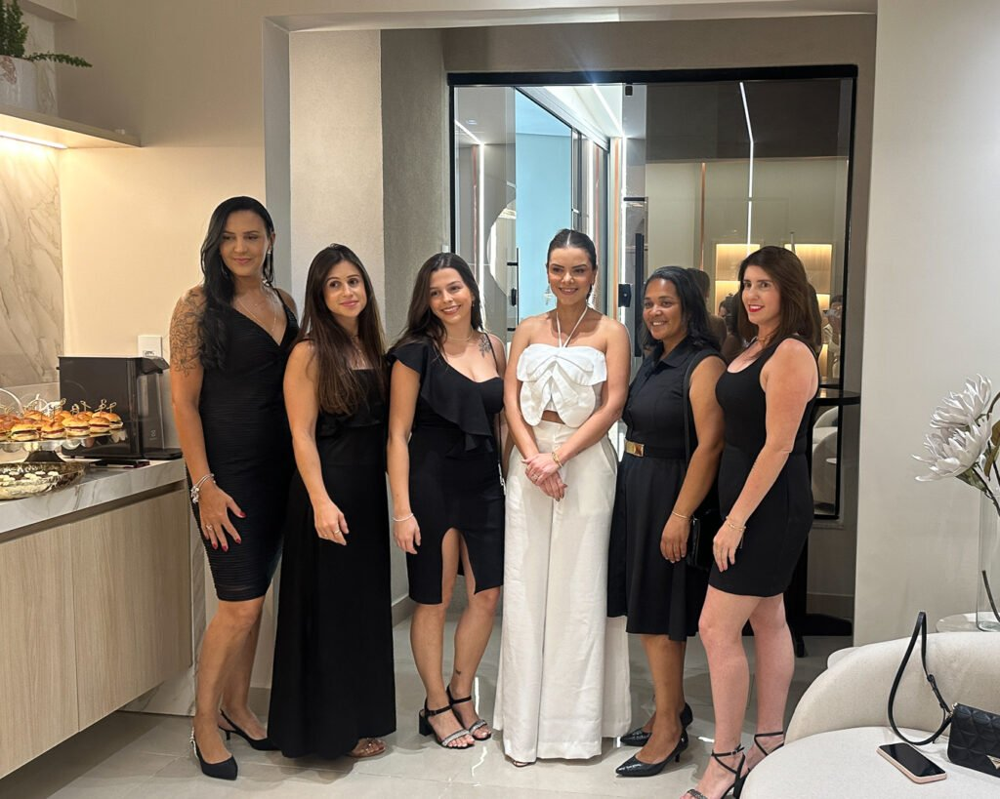
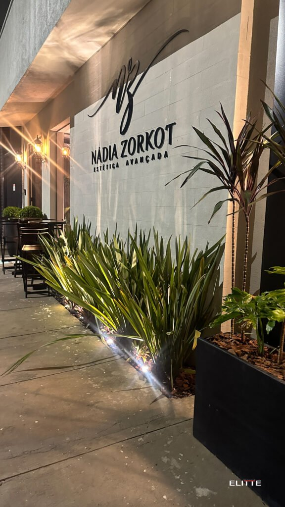
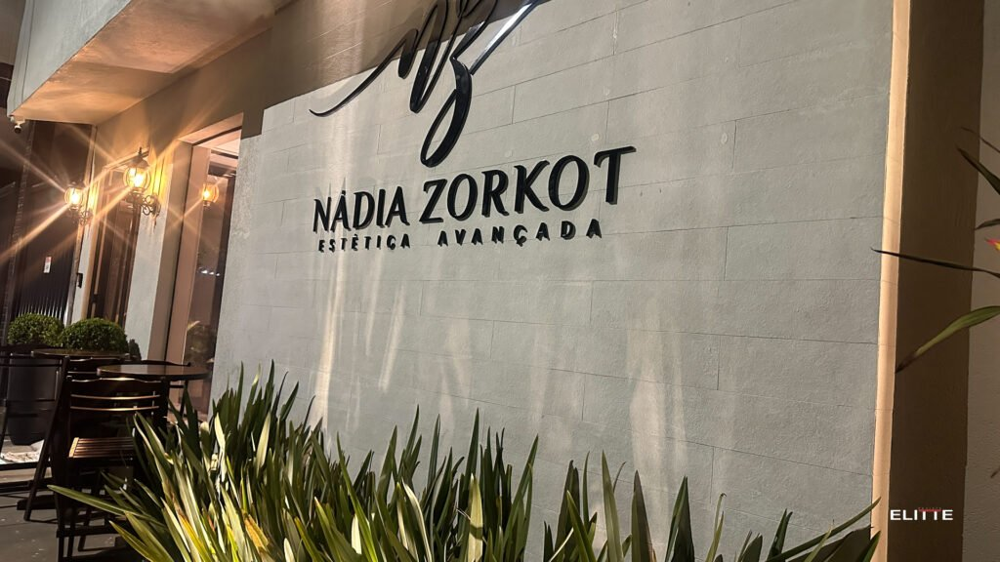
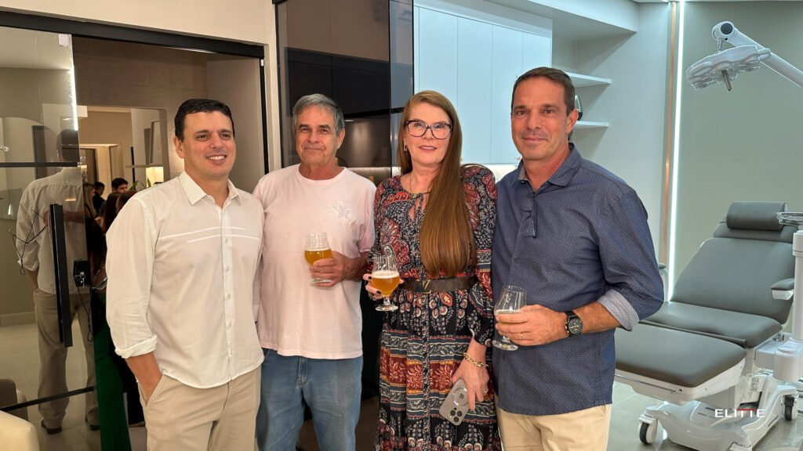
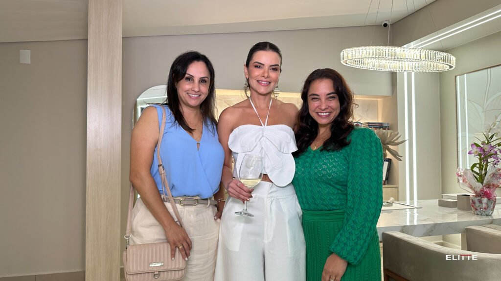
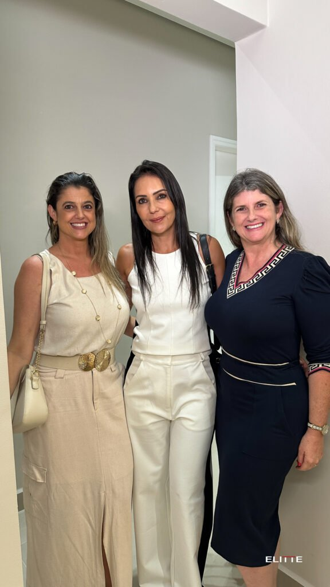
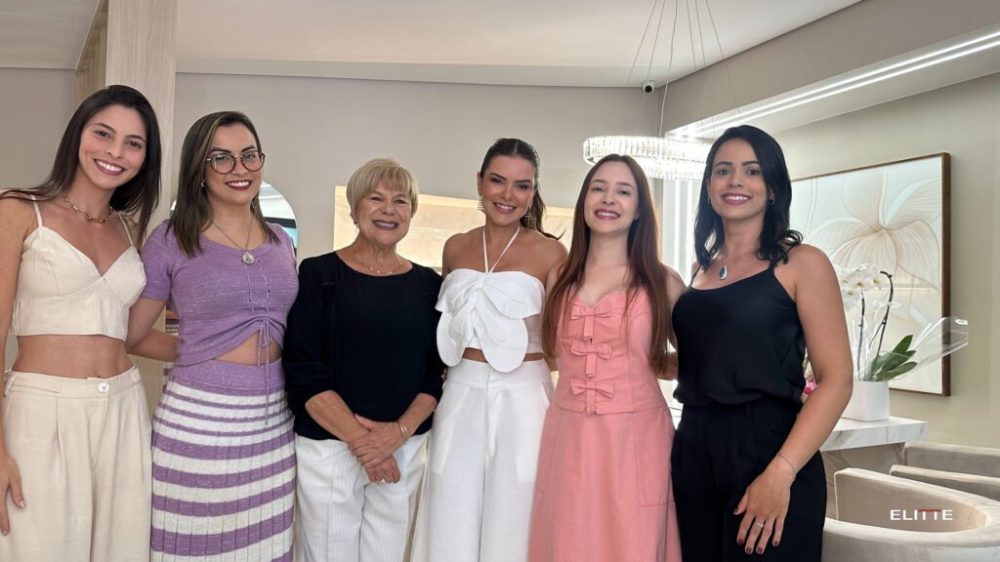
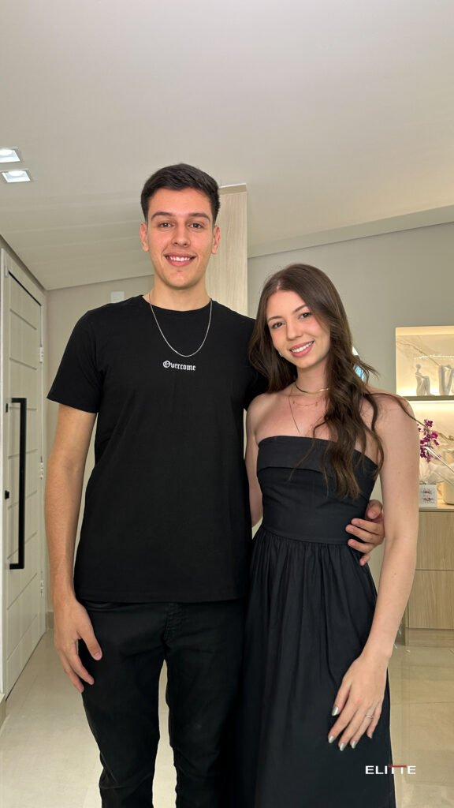

Clínica boutique de alta performance em Lavras-MG, comandada pela Dra. Nádia Zorkot. Cirurgias estéticas da face, contorno dos sonhos e tecnologias de ponta para realçar a sua beleza natural com máxima segurança.

Tratamentos faciais e corporais desenhados para harmonizar, rejuvenescer e realçar seus traços com naturalidade, fundamentados na proporção áurea.
Definição precisa do contorno mandibular e eliminação da gordura submentoniana. Proporciona um perfil elegante, desenhado e rejuvenescido.
Remoção criteriosa do excesso de pele e bolsas de gordura nas pálpebras superiores e inferiores, devolvendo o vigor e a leveza ao olhar.
Tratamento minimamente invasivo por fibra óptica sob a pele que promove efeito lifting imediato, quebra suave de gordura e estímulo contínuo de colágeno.
Equilíbrio entre proporções, contornos e estruturas faciais com preenchedores de ácido hialurônico de alta tecnologia. Sempre respeitando a identidade única do paciente.
Substâncias bioabsorvíveis (Sculptra, Radiesse, Elleva) que reprogramam as células da pele para produzir novo colágeno em alta escala, devolvendo densidade e firmeza.
A união perfeita entre o alívio das linhas de expressão dinâmicas (toxina botulínica preventiva) e a sustentação tecidual com fios de tração e estímulo de colágeno.

"A verdadeira estética não transforma quem você é; ela desvela a sua melhor versão com elegância, harmonia e segurança."
Com mais de 20 anos de trajetória sólida na área da saúde e reabilitação, a Dra. Nádia Abdallah Zorkot é uma das profissionais mais respeitadas de Lavras e do Sul de Minas Gerais em Cirurgias Estéticas da Face (CTBMF), Lipo de Papada HD e Harmonização Orofacial.
Atuando como professora e mentora de outros profissionais, Dra. Nádia é conhecida por seu olhar minucioso para as proporções anatômicas e pelo rigor técnico absoluto — contando sempre com equipe multiprofissional nos procedimentos para proporcionar uma experiência serena e acolhedora.
Dois profissionais qualificados acompanhando cada etapa do procedimento.
Planejamento individualizado integrando dentes, lábios e anatomia facial.
Formadora de novos profissionais em técnicas cirúrgicas avançadas da face.
Comunicação acolhedora e acompanhamento pós-procedimento contínuo.
Inaugurada em outubro de 2024 na prestigiada Av. João Aureliano, 890 (Bairro Centenário). Um espaço projetado pela arquiteta Ana Paula Silva com foco em privacidade, sofisticação e conforto de nível internacional.






Mais de 118 avaliações reais e espontâneas no Google Maps, consolidando a classificação impecável de 5.0 estrelas.
"Amei minha experiência na NZ Estética! Fui muito bem atendida, a Dra. Nádia é super atenciosa e cuidadosa. Estou muito satisfeita com o resultado! ❤️✨ Recomendo muito!"
"Olá, já fiz com a Dra. Nádia a blefaroplastia e pretendo esse ano ainda fazer outro procedimento, ela é maravilhosa quanto pessoa e profissional, admiro e tenho um carinho enorme por ela ❤️"
"Eu tive uma ótima experiência com um procedimento feito na clínica da Dra. Nádia. A comunicação com a equipe foi cordial e bem acolhedora. A presença de dois profissionais durante o procedimento me fez sentir seguro!"
Bastidores de procedimentos, orientações diárias de autocuidado e transformações reais publicadas diariamente em nossas redes oficiais.
Agende seu horário com antecedência e viva a experiência única de cuidar de si na clínica mais sofisticada de Lavras.